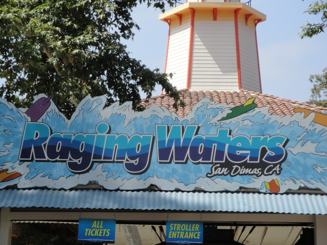
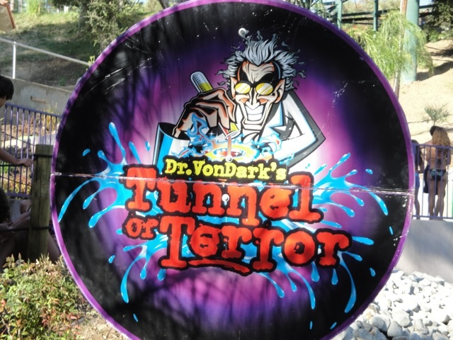
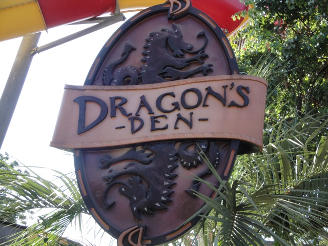
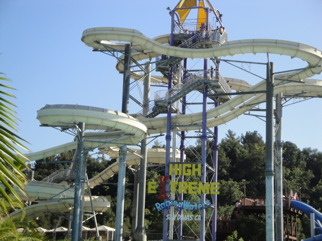
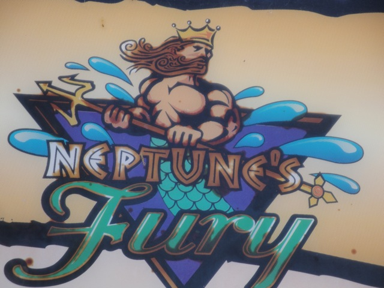
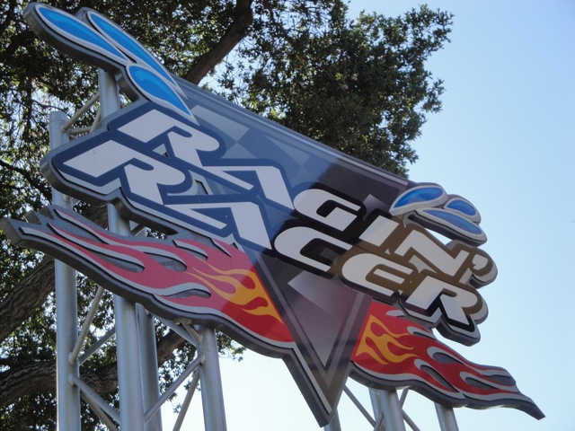
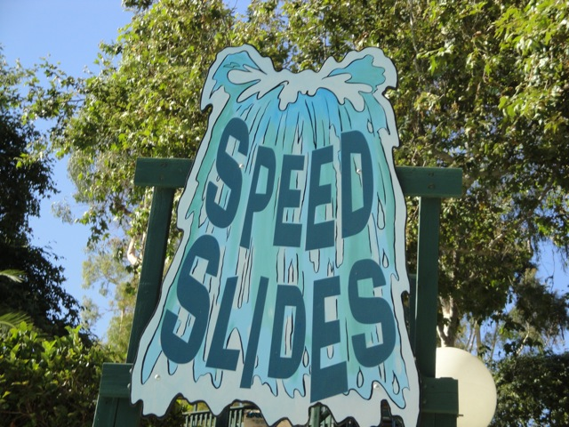
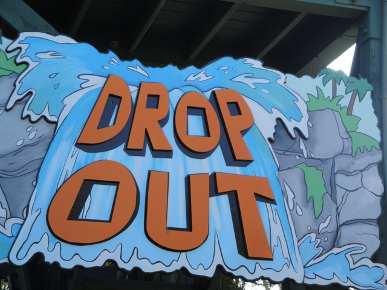
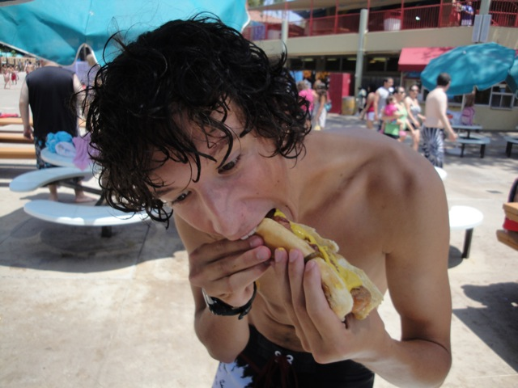
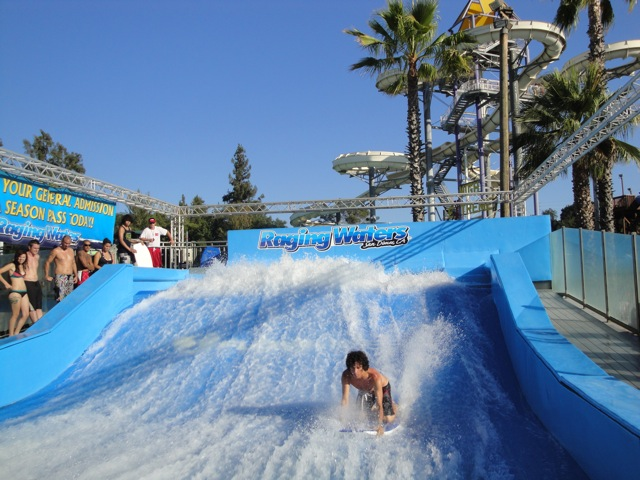

| |
Raging Waters Review

Raging Waters is a very fun and fairly large water park, however, the theme of the place tended to be crowded and overrated. Most of their slides were just average and overrated. I know that people usually consider this to be Southern California's best water park. But like I said before, the whole place just seems big, average, overrated, and uptight while Wild Rivers was just the oppisite (R.I.P. =( You tore down the wrong water park you idiots!!!). But it's still a fun waterpark and it definetly has a pretty good water slide collection.
The Major Waterslides
There is a link to a review of all the Major Waterslides at Raging Waters.
(Please keep in mind that there's no review of Aqua Rocket since it was closed during my last visit).
Dr. Von Dark's Tunnel of Terror Review

Dragons Den Review

High Extreme Review

Neptunes Fury Review

Raging Racer Review

Speed Slides Review

Past Waterslides
Drop Out Review

All the Other Waterslides
Here are the reviews of all the other water slides at Raging Waters. Well one slide they have that's good is the Berduma Triangle. This is a clone of the Enclosed Lizard Lagoon Slides. So, yeah. That straight slide kicks ass!!! However, unlike at Six Flags Hurricane Harbor, this one always has a long line. =( Thunder River is the parks family raft ride. It's a good family raft ride that I totally recommend. But one thing I hate Raging Waters for is the removal of River Chute. That ride kicked ass and Raging Racer isn't anywhere near as good as it. Raging Waters also has a lot of kiddy slides, but yeah. They're just kiddy slides.
Dining
Ok, I know I say Raging Waters is overrated, and they are! But if I had to make an exception for one section, it would be their food. Raging Waters actually has a really good selection of dining. They had a wide variety of things such as hamburgers, hot dogs, chicken fingers, and pizza. I ended up getting a Bacon Wrapped Hot Dog. And just like at the Santa Barbara Fair, it tasted freaking amazing. Plus, how many theme parks or water parks do you know sell Bacon Wrapped Hot Dogs. They're so good they're almost worth the typical super overpriced price. Now here's a story from my last visit about Raging Water's dining. While Cody and I were walking to Speed Slides, we walked past a place that was selling those pies that come in a container. For some reason, I suddenly got a craving to get one of these pies. They just looked so good, however due to Raging Water's long lines and our mission to see as much of the park as possible, we never got to eat the pies. Hell, I'm still craving one of those pies when typing the story. Please email me if you know where I can buy those pies. I want one.

Yeah, Bacon Hot Dogs are delicous.
Theming and Other Attractions
Here are the reviews of all the other stuff at Raging Waters. Well, the park has a little tiki theming, but it's low quality. As for other stuff, they have an overcrowded wave pool and a really nice lazy river. In one of the kids areas, they have the Lilypads. After waiting in a long line, (groan) You step on the lilypad and try to get across the water on the lilypads. It's ALOT of fun. But ultimately, you have to do the Flowrider. And let me tell you something. Flowriders kick ass. In fact, the Flowrider is the best attraction at this park. There's no excuse for not liking the Flowrider. I loved it even back when I had my fear of waves. It'll have a long line, yeah I know that sucks, but it'll be worth it. So just remember to do it.

Here is the Flowrider. It kicks ass.
In Conclusion
Raging Waters is a nice waterpark that's just horribly overrated and horribly crowded. I mean, it's a really fun waterpark, but OMG! The lines are huge and the slides are average at best. I'd still recommend going here if you're a waterpark nut.
Tips
*Get to the park early. It's going to be crowded.
*Wear flip flops and sunscreen. It'll most likely be hot when you visit.
*Do Dr. Von Dark early in the morning before the line gets really long.
*Have Fun!!!
Location
San Dimas, California, USA
Last Day Visited
August 22, 2021
Complete Update List
2010
Waterpark Weekend 2010
2005
Raging Waters 2005
Here's a link to the parks website.
Home
|